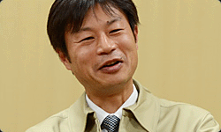

|
3. 在 AR 裡廣闊的恐怖世界 |
| 岩田： |
伊豆野先生，完成了制作後，有沒有一種反應是能實現出人們有著共同話題的恐怖嗎？ |
| 伊豆野： |
是的。即使在「靈魂照相機」模式中，也有提供出新娛樂的感觸。「靈魂照相機」模式的「心靈照片攝影」，是用任天堂 3DS 的照相機，把照出的照片變成心靈照片的遊戲。可以照到人臉的扭曲或是不存在的東西…。 |
| 岩田： |
原來如此。那如果拍攝後，人看不到的就不存在了吧 ( 笑 )。 |
| 伊豆野： |
我感覺人看到恐怖的東西後會引起其他人產生共鳴，然後實現一起享受遊戲。在「靈魂照相機」模式中，可以稱為「附體物的診斷」…。 |
| 岩田： |
是診斷…附體物品嗎？( 笑 ) |
| 伊豆野： |
是，這個不但是可以照出附在其他人身上的東西或照出怨靈，還可以把臉或表情變成附身的東西。因為正式收到了「今天被這樣的東西附身了」的評語，所以看到了那個情緒相當的高漲 ( 笑 )。

|
| 岩田： |
就是說，不僅僅是恐怖，大家在聚集的場所玩遊戲，也可以提出其他玩遊戲的方式啊。 |
| 岩田： |
這就是菊地先生說起的“擦身”嗎 ( 笑 )。 |
| 全體： |
( 笑 ) |
| 菊地： |
請在大家聚會時一定使用這遊戲來試膽量。還有所謂的「除掉詛咒的臉」，就是被照成照片的人會作為怨靈攻擊過來，在把那個怨靈除掉的模式。不過我很擔心大家在買入那個遊戲之後，會不會都來拍我的照片 ( 笑 )。
|
| 岩田： |
( 笑 )。那大概在任天堂公司內部都會發起同樣的活動吧。是吧，伊豆野，牧野 ( 互相看對方的臉 ) 哈哈哈…( 笑 )。 |
| 菊地： |
用現有的 AR 機能和恐怖要素組合在一起，感覺是個對現實世界，也就是自己身邊的房間或熟悉的人產生影響並讓其可以進入恐怖體驗的遊戲。 |
| 岩田： |
說起 AR，也對任天堂 3DS 內藏的 AR 小遊戲 *9 有影響，雖然想在一般的地方做出[要是攝影標記就會在那上面砰的一下出來什麼]的捕捉方式，但我感覺這次的遊戲是擴展的很寬，和大家共享遊戲，會在不同的意圖中產生各中各樣的 AR。
*9 AR 小遊戲是內藏在任天堂 3DS 裡的軟件。把和遊戲本體同包裝的 AR 筆記用照相機拍攝照片的遊戲。 |
| 牧野： |
我也那麼想。比如說「靈魂照相機」本身，作為機能雖然使用了 AR，從按下快門到映出照片的期間，還有想會發生什麼期間都是非常重要的。那樣也會做的更有『零』原有的風格，我感覺這些都關係到想像的恐怖。 |
| 岩田： |
制作恐怖遊戲時，團隊中大概會很恐懼吧，雖然好像有人說「做恐怖遊戲還是放過我吧」，那樣的人已經沒有了嗎？
|
| 伊豆野： |
啊，還有幾個啊。 |
| 岩田： |
那些人和產品的關係，現在是什麼情況了？ |
| 牧野： |
最害怕的女性，雖然現在也在看「AR 筆記」，但感覺害怕就跑掉了 ( 笑 )。 |
| 伊豆野： |
實際那確實我們的目標，而並不是他本身的錯誤 ( 笑 )。 |
| 牧野： |
雖然也有寫女性說「害怕的人雖然上手難但也稍微有些興趣」，但他們在實際玩遊戲時就會說「說話或操作很有趣，被吸引了」。 |
| 菊地： |
當然確實有用感覺到恐怖的邏輯組裝起來的部分，但本做這次利用了 AR 技能，沒有讓人討厭的那類東西，感覺很不可思議的還留有恐怖度。 |
| 岩田： |
所謂的恐怖和神秘，感覺是把在生理方面不好的感覺一但直接讓人活生生的看到，或者是把想像或說不清的現像聯系到恐怖感和驚恐的形式，但『零』制作組的做法，完全是後者吧。 |
| 菊地： |
是那樣啊。這次的那種方式依然沒變，交彙在了稱為 AR 機能的突破口上，感覺能夠做出更加廣泛的遊戲可能性。 |
| 岩田： |
話說回來，『心靈照相機～被附身的筆記本～』的項目，真實稍微有點難產啊。 |
| 伊豆野： |
出了各種情況啊。 |
| 岩田： |
我沒怎麼用力的說過 ( 笑 )。但感覺一定是考慮過很多並協商了很多…。 |
| 伊豆野： |
附標題『被附身的筆記本』是我說出來的。 |
| 岩田： |
菊地先生，關於從『零』改變了名稱，最初是怎麼想的？ |
| 菊地： |
那個名稱就算在我心裡，標題也必須有符合新商品理念的“一般性和恐怖度”，在這個共通的認識內，我最初考慮的標題是『麻生博士的心靈照相機』。 |
| 伊豆野： |
麻生博士那個人，是『零』系列中發明了“攝影機”*10 的人，在全系列中都登場的名字。
*10 攝影機是在故事中登場的可以照出怨靈或不存在的東西的心靈照相機。 |
| 岩田： |
對玩遊戲的人來說，很清楚「啊，是那個人嗎？」。 |
| 菊地： |
雖然那麼想後就交了提案，但從開始就有很多聲音問「那是誰？」，一瞬間就放棄了。那麼還可以用另外一個軸，雖然有了所謂的「AR 恐怖遊戲」提案，但那邊也從岩田先生那裡得到了否定 ( 笑 )。 |
| 岩田： |
初次聽到『AR 恐怖遊戲』時，感覺看起來是『AR 遊戲』的二流模仿。實際的商品要超越有經驗制作『AR 遊戲』人的想像，要引起「啊？」的反應，雖然很明白心情，但感覺這個項目給人錯誤的印像。 |
| 牧野： |
那麼可以稱為休閑型恐怖遊戲嗎，雖然表示出了這次作品的方向性，但感覺遊戲的本質還什麼都沒傳達到…。 |
| 岩田： |
是。 |
| 菊地： |
雖然今後「心靈照相機」這個關鍵詞會保留到最後，但副標題會多出現很多。那當中也會聽取各方面的意見，但這次的「被附身的筆記本」已經決定了商品特征和氣氛的傳達。 |
 | 相關連結 |
|
- http://www.nintendo.co.jp/3ds/interview/alcj/vol1/index3.html
- http://bbs.a9vg.com/thread-2113824-1-1.html
|
|